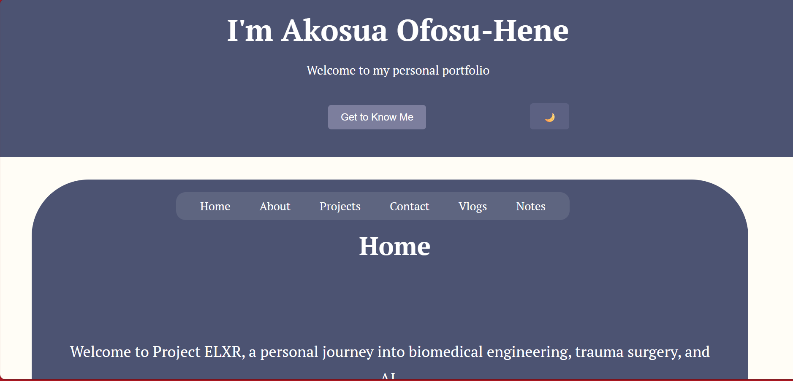
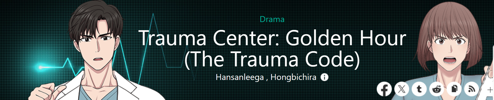

2026

Portfolio Completed
Brought this whole personal portfolio together — from the liquid hero blobs to the minecraft loot drop which actual happens to be my minecraft avatar too
2025

Expanding the Toolkit
Started Tangent for my Duke of Edinburgh Award - A website for students and educators alike, as I was tired of using several different apps to manage everything I thought it would be useful if I had one website or app for everything
2024

First Portfolio
Made the very first draft of my personal portfolio for fun - The aesthetic look very different from where we first started at
2024

Why I started
Read an amazing webtoon called Trauma Center: Golden Hour(The Trauma Code) and realised that what I wanted to specialise within medicine was Trauma
Read the webtoon here